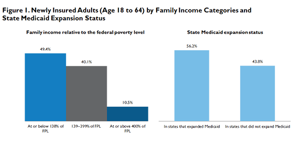

|  |
|
||
Who Are the Newly Insured as of Early March 2014?
Adele Shartzer, Sharon K. Long, and Stephen ZuckermanMay 22, 2014
In May 2014, the US Department of Health and Human Services (HHS) announced that enrollment in health plans through the health insurance Marketplaces had exceeded 8 million people, with 5.4 million people signing up through the federal Marketplace and another 2.6 million enrolling through state-based Marketplaces. Estimates suggest that another 5 million people purchased Affordable Care Act (ACA)-compliant plans outside the Marketplaces (HHS 2014). The Centers for Medicare and Medicaid Services (CMS) report that total Medicaid and CHIP enrollment increased by an estimated 4.8 million people between October 2013 and March 2014 relative to the July–September 2013 period (CMS 2014). Although some of these individuals may already have had coverage, data from multiple sources suggest that the uninsured rate declined rapidly in early 2014 (Carman and Eibner 2014).1 For example, Long and colleagues report a 2.7 percentage-point drop in uninsurance between September 2013 and early March 2014, representing a gain in coverage for about 5.4 million people.2
Knowledge about the characteristics of these newly insured individuals provides an early assessment of how well the different components of the ACA are working at expanding coverage as of early March. Further, information on the health needs and health care experiences of newly insured individuals is important for understanding their likely health care demands as they gain coverage, along with their potential effect on the risk pools in private and public insurance programs.
What We Did
This brief draws on data collected in the March 2014 wave of the Health Reform Monitoring Survey (HRMS). We examine the demographic characteristics and health status of the newly insured, whom we define as those who have gained coverage within the past 12 months and were uninsured just before enrolling in their current coverage. We compare them to those who already had coverage for the whole previous 12-month period (whom we refer to as the “full-year insured”), and provide some information on those who are uninsured at the time of the March 2014 survey (the “remaining uninsured”).3
It is important to note several things about these data. First, the newly insured group includes those who gained Medicaid or CHIP as well as those who gained private coverage through an employer or the Marketplaces.4 Second, because 80 percent of the March 2014 HRMS sample had completed the survey by March 6, these estimates do not capture the characteristics of adults who enrolled in a Marketplace plan during the enrollment surge in late March and early April, which increased enrollment by about 3.8 million (HHS 2014). Our definition of “newly insured” restricts the population to those with coverage changes within the previous 12 months (i.e., since March 2013), and so we miss any previously uninsured people who gained coverage under ACA changes that occurred before 2013 (such as the ability to keep dependents on a parent’s health plan until age 26 and early state Medicaid expansions). Finally, small sample sizes for some subgroups within the newly insured population limit the analyses that are possible with a single quarter of data. We plan to provide more in-depth analyses of the uninsured in the future by pooling multiple quarters of the HRMS.
What We Found
Most of the newly insured adults are in the income groups targeted by the ACA’s Medicaid expansion and the health insurance Marketplaces. Nearly half of the newly insured adults (49.4 percent) have family incomes at or below 138 percent of the federal poverty level (FPL), the income group targeted by the Medicaid expansion (figure 1). Another 40.1 percent have family income between 139 and 399 percent of FPL, the income group that could be eligible for subsidized coverage through the Marketplace. Only 10.5 percent of the newly insured adults have family income at or above 400 percent of FPL.
Consistent with the strong gain in coverage among the population targeted by the Medicaid expansion, the majority of the newly insured adults (56.2 percent) are in the states that expanded Medicaid under the ACA. Despite the gain in coverage for low-income adults, however, the majority of the remaining uninsured are also in this low-income group in both the Medicaid expansion states and in the nonexpanding states, at 58.7 percent with family income at or below 138 percent of FPL in the Medicaid expansion states and 68.9 percent in the nonexpanding states (data not shown).
The newly insured adults tend to be younger than adults who had coverage for the full year (50.4 percent versus 33.0 percent under age 35); however, they are more likely to report fair or poor health than full-year insured adults (17.4 percent versus 11.8 percent).5 While 81.8 percent of the newly insured are in good, very good, or excellent health, about 1 in 5 newly insured adults is in fair or poor health. The newly insured adults are also more likely than adults who had coverage for the full year to report days with poor physical and mental health, a measure of health-related quality of life (figure 2). However, when we focus on the population targeted by the Medicaid expansion (family income at or below 138 percent of FPL), we find that newly insured low-income adults are less likely than the full-year insured adults in that income range to be in fair or poor health (figure 3). However, among adults with family incomes above 138 percent of FPL, we find the newly insured are more likely than the full-year insured to be in fair or poor health and to report having days in poor physical or mental health (figure 4). Thus, while the newly insured overall may have higher health care needs than all adults with full-year coverage, that is not the case among adults within the target populations for the Medicaid expansion.
The newly insured adults often lack a strong connection to the health care system; more than a third (35.7 percent) did not have a usual source of care at the time of the survey. Further, almost half (47.9 percent) reported that it has been a year or more since their last routine checkup. These levels are much higher than those reported for full-year insured adults, at 18.9 percent without a usual source of care and 30.8 percent without a routine checkup in the previous year (figure 5).
What It Means
As the first open enrollment period in the health insurance Marketplaces began its last month, data from the March HRMS suggests that many of those who gained coverage were within the ACA target populations for the Medicaid expansion and Marketplace subsidies. Nearly half of the newly insured have family income below 138 percent of FPL, the income range targeted by the Medicaid expansion in the 24 states (plus the District of Columbia) that implemented a coverage expansion by April 1, 2014.6 Another 40 percent have family income in the range that could qualify them for subsidized coverage through the Marketplace. Thus, both of the key components of the ACA that were implemented in early 2014 played a role in expanding coverage.
Nonetheless a large share of the adults who remained uninsured in March (64.7 percent) also fall within the target population for the Medicaid expansion. While the gains in coverage for low-income adults have been impressive for the states that expanded Medicaid, the high share of the remaining uninsured with family income at or below 138 percent of FPL in those states highlights the continued need for outreach to enroll more of the adults who are eligible under the Medicaid expansion. This should be the priority group for state outreach and education efforts for most of 2014, because most higher-income adults cannot enroll through the Marketplace until the next open enrollment period in November.7 In states that had not expanded Medicaid, there are few coverage options for the remaining uninsured with low family incomes.
Expanded insurance coverage under the ACA is just the first step toward improved access to and use of health care, with the long-term goal of improving health status. The findings here highlight challenges faced by the newly insured and the health plans and providers that serve them. Although most of the newly insured are in good or better health, roughly 1 in 5 are in fair or poor health, and more than half report poor health days due to either physical or mental health issues. Yet, even with these high levels of health care needs, only about a third of the newly insured have a usual source of care and only about half had a routine checkup in the past year. Helping the newly insured form connections with primary care providers and obtain the care that they need in the appropriate settings is the next step in moving from coverage to care. Making that transition may be difficult as the newly insured, particularly the newly insured who have not had health insurance before, may need help learning how to access care through their coverage (Decker et al. 2012; Taubman et al. 2014).
References
Carman, K., and C. Eibner. 2014. Changes in Health Insurance Enrollment since 2013. Santa Monica, CA: RAND.
Centers for Medicare and Medicaid Services. 2014. Medicaid & CHIP: March 2014 Monthly Applications, Eligibility Determinations, and Enrollment Report. Washington, DC: US Department of Health and Human Services.
Decker, S. L., J. A. Doshi, A. E. Knaup, and D. Polsky. 2012. “Health Service Use among the Previously Uninsured: Is Subsidized Health Insurance Enough?” Health Economics 21(10): 1155–68.
Taubman, S., H. Allen, B. Wright, K. Baicker, and A. Finkelstein. 2014. “Medicaid Increases Emergency Department Use: Evidence from Oregon’s Health Insurance Experiment.” Science 343(6168): 263–268.
US Department of Health and Human Services (HHS). 2014. Enrollment in the Health Insurance Marketplace Totals over 8 Million People. Washington, DC: HHS.
About the Series
This brief is part of a series drawing on the Health Reform Monitoring Survey (HRMS), a quarterly survey of the nonelderly population that is exploring the value of cutting-edge Internet-based survey methods to monitor the Affordable Care Act (ACA) before data from federal government surveys are available. The briefs provide information on health insurance coverage, access to and use of health care, health care affordability, and self-reported health status, as well as timely data on important implementation issues under the ACA. Funding for the core HRMS is provided by the Robert Wood Johnson Foundation, the Ford Foundation, and the Urban Institute.
For more information on the HRMS and for other briefs in this series, visit www.urban.org/hrms.
About the Authors
Adele Shartzer is a research associate, Sharon Long is a senior fellow, and Stephen Zuckerman is a senior fellow and codirector in the Urban Institute’s Health Policy Center.
The authors gratefully acknowledge the suggestions and assistance of Dana Goin, Michael Karpman and Katherine Hempstead.
Note 1 See also “US Uninsured Rate Drops to 13.4%,” Gallup, May 5, 2014. 2 Long, Sharon K., Genevieve M. Kenney, Stephen Zuckerman, Douglas Wissoker, Dana Goin, Katherine Hempstead, Michael Karpman, and Nathaniel Anderson. “Early Estimates Indicate Rapid Increase in Health Insurance Coverage under the ACA: A Promising Start.” Washington, DC: Urban Institute, 2014. 3 In this brief, comparisons between the newly insured, full-year insured, and remaining uninsured are not adjusted for age, gender, or other demographic characteristics. Among the newly insured, 32.3 percent were insured none of the previous 12 months, 31.9 percent were insured 1–5 months, and 33.5 percent were insured 6–11 months. 4 By definition, the newly insured excludes those who had coverage before enrolling in Medicaid or health plans through Marketplaces. 5 April 2014 estimates from HHS find that 28 percent of enrollees in health plans through the Marketplace were under age 35; our definition of newly insured differs from the population in the HHS report in important ways that could contribute to the different age distributions. For example, we include in the newly insured adults with Medicaid and ESI, and the HHS estimates include those who may have had coverage prior to enrolling in health plans through the Marketplace. 6 Two states elected to expand Medicaid coverage but had not implemented the expansion as of April 1, 2014. 7 Special enrollment periods in Marketplace health plans are possible if an individual experiences a qualifying life event, such as a move to another state or a change in income or family size.
|

 |
 |
 |